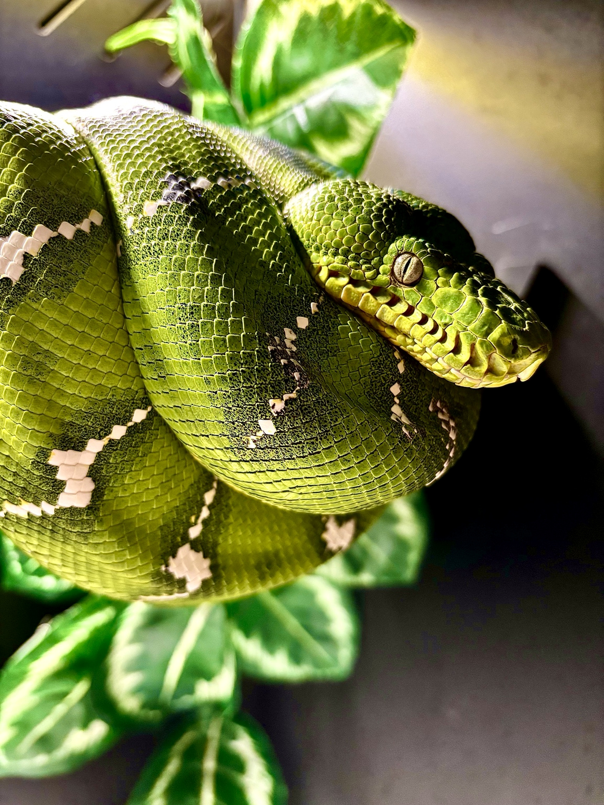
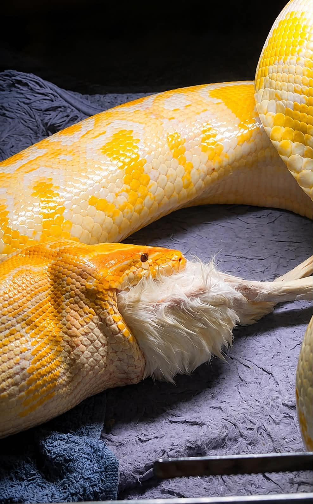

PASJA • DOŚWIADCZENIE • ODPOWIEDZIALNA HODOWLA
GONZO EXOTICS
Specjalizujemy się w hodowli wyjątkowych gadów, z naciskiem na dobrostan, zdrowie, rzetelną dokumentację pochodzenia i świadomy dobór par hodowlanych.
DOWIEDZ SIĘ WIĘCEJ →GONZO EXOTICS
Hodowla oparta na jakości i odpowiedzialności
Naszym celem jest prowadzenie hodowli w sposób uporządkowany, przejrzysty i nastawiony na dobrostan zwierząt. Każdy osobnik powinien mieć udokumentowane pochodzenie, właściwe warunki utrzymania oraz pełną historię hodowlaną.
Strona będzie rozwijana jako praktyczna baza wiedzy o gatunkach utrzymywanych w hodowli oraz miejsce prezentacji dostępnych osobników, galerii i planów hodowlanych.
GŁÓWNE GATUNKI
Specjalizacja hodowli

Morelia viridis
Green Tree Python — biologia, warunki, żywienie, rozmnażanie i galeria.
Poznaj gatunek →
Corallus caninus
Emerald Tree Boa — biologia, środowisko, pielęgnacja, rozród i galeria.
Poznaj gatunek →Python bivittatus
Pyton birmański — hodowla, żywienie, rozmnażanie, morphs i genetyka.
Poznaj gatunek →BAZA WIEDZY
Praktyka hodowlana w kontekście
Rzetelne opracowania o gatunkach Gonzo Exotics: źródła, doświadczenie hodowlane, naturalna historia i wyraźne granice pomiędzy tym, co potwierdzone, a tym, co zależy od konkretnego terrarium.

Bez przekarmiania
Jak połączyć wielkość ofiary, odstęp między posiłkami, tempo wzrostu i kondycję ciała — bez „power feedingu”, głodzenia i magicznej tabelki.
Czytaj opracowanie →GALERIA
Zdjęcia z hodowli

DOSTĘPNE OSOBNIKI
Aktualne młode i rezerwacje
W tym miejscu pojawią się aktualnie dostępne osobniki wraz z datą wyklucia lub urodzenia, płcią, pochodzeniem, sposobem karmienia, zdjęciami, statusem rezerwacji i dokumentacją.
HODOWLA
Dokumentacja, dobrostan i świadome rozmnażanie
Udokumentowane łączenia, rodzice, przebieg inkubacji i rozwój młodych w Gonzo Exotics.

Hera × Tyson
Classic Albino het Granite × Hypo Granite het Albino
KONTAKT